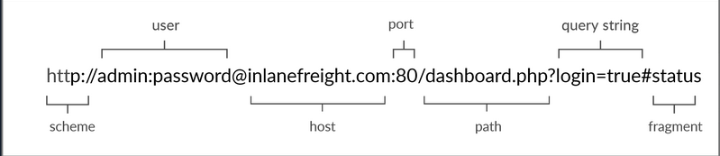
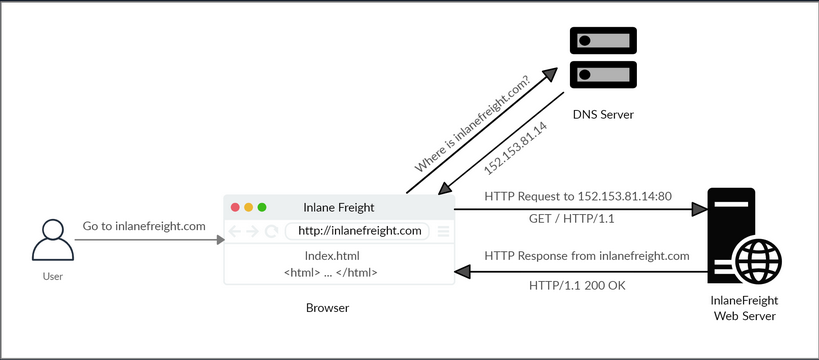
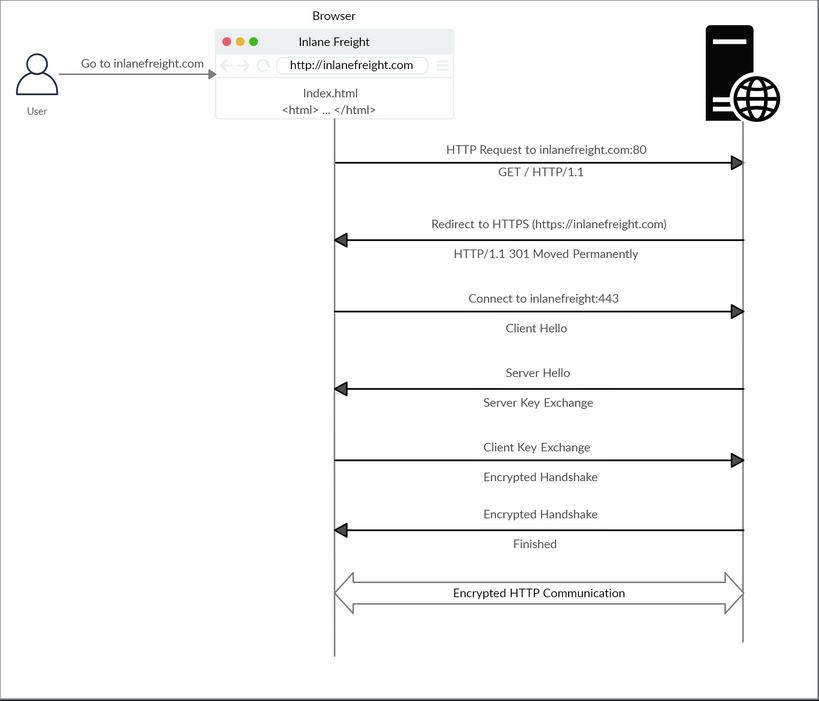
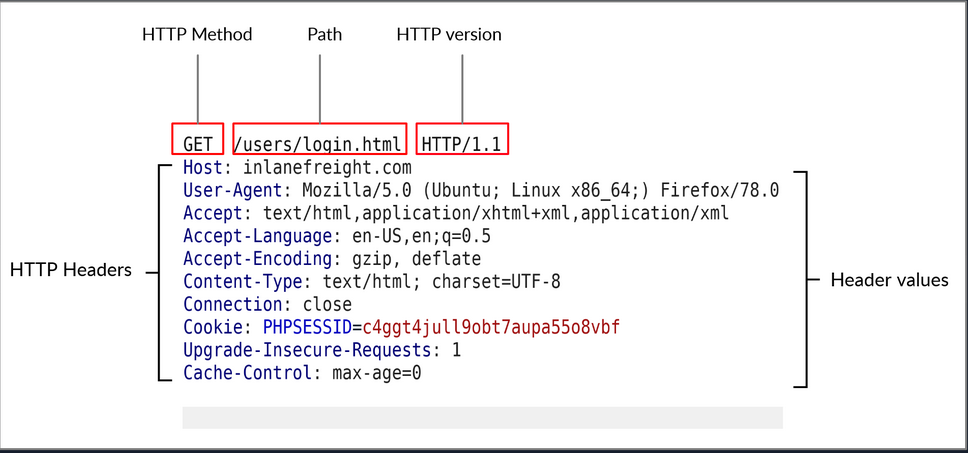
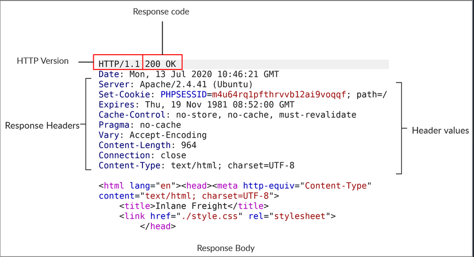

- HyperText Transfer Protocol (HTTP)
- HyperText Transfer Protocol Secure (HTTPs)
- HTTP Requests and Responses
- HTTP Headers
- HTTP Methods and Codes
HyperText Transfer Protocol (HTTP)
Most internet communications are made with web requests through the HTTP protocol. HTTP is an application-level protocol used to access the World Wide Web resources. The term 'hypertext' stands for text containing links to other resources and text that the readers can easily interpret.
HTTP communication consists of a client and a server, where the client requests the server for a resource. the server processes the requests and returns the requested resource. The default port for HTTP communication is port 80, though this can be changed to any other port, depending on the web server configuration.
Uniform Resource Locator (URL)

| Structure-Element | Example | Description |
|---|---|---|
| Schema | http:// https:// | is used to identify the protocol being accessed by the client |
| User Info | admin:password@ | optional component that contains the credentials used to authenticate to the host, and is separated from the host with an '@' sign |
| Host | inlanefreight.com | signifies the resource location can be hostname or IP address |
| Port | :80 | is separated from the host by a colon if no port is specified, http schemes default to port 80 and https to port 443 |
| Path | /dashboard.php | points to the resource being accessed, which can be a file or a folder if there is no path specified, the server returns the default index |
| Query String | ?login=true | starts with a question mark, and consists of a parameter and a value multiple parameters can be separated by an ampersand |
| Fragments | #status | are proccessed by the browser on the client-side to locate sections within the primary resource |
HTTP Flow

cURL
cURL is a command-line tool and library that primarily supports HTTP along with many other protocols. -> Good candidate for scripts as well as automation, making it essential for sending various types of web requests from the command line.
Example:
d41y@htb[/htb]$ curl inlanefreight.com
<!DOCTYPE HTML PUBLIC "-//IETF//DTD HTML 2.0//EN">
<html><head>
...SNIP...
HyperText Transfer Protocol Secure (HTTPs)
One significant drawback of HTTP is that all data is transferred in clear-text. This means that anyone between the source and destination can perform a Man-in-the-Middle (MiTM) attack to view the transferred data.
To counter the issue, the HTTPs was created, in which all communications are transferred in an encrypted format, so even if a third party does intercept the request, they would not be able to extract the data out of it.
HTTPs Flow

cURL with HTTPs
cURL should automatically handle all the HTTPs communication standards and perform a secure handshake and then encrypt and decrypt the data automatically. However, if you contact a website with an invalid SSL certificate or an outdated one, then cURL by default would not proceed with the communication to protect against MiTM attacks.
To ignore certificate checks, you can set -k.
d41y@htb[/htb]$ curl https://inlanefreight.com
curl: (60) SSL certificate problem: Invalid certificate chain
More details here: https://curl.haxx.se/docs/sslcerts.html
...SNIP...
d41y@htb[/htb]$ curl -k https://inlanefreight.com
<!DOCTYPE HTML PUBLIC "-//IETF//DTD HTML 2.0//EN">
<html><head>
...SNIP...
HTTP Requests and Responses
Request
HTTP communications mainly consists of an HTTP request and an HTP response. An HTTP request is made by the client and is processed by the server. The request contains all of the details we require from the server, including the resource, and many other options.

| Field | Example | Description |
|---|---|---|
| Method | GET | HTTP method or verb, which specifies the type of action to perform |
| Path | /users/login.html | path to the resource being accessed can also be suffixed with a query string |
| Version | HTTP/1.1 | third and final field is used to denote the HTTP version |
Response

| Field | Example | Description |
|---|---|---|
| Response Code | 200 OK | are used to determine the request's status |
| Response Body | [HTML code] | usually defined as HTML code can also be JSON or website resources |
cURL
cURL also allows to preview the full HTTP request and response by adding -v.
d41y@htb[/htb]$ curl inlanefreight.com -v
* Trying SERVER_IP:80...
* TCP_NODELAY set
* Connected to inlanefreight.com (SERVER_IP) port 80 (#0)
> GET / HTTP/1.1
> Host: inlanefreight.com
> User-Agent: curl/7.65.3
> Accept: */*
> Connection: close
>
* Mark bundle as not supporting multiuse
< HTTP/1.1 401 Unauthorized
< Date: Tue, 21 Jul 2020 05:20:15 GMT
< Server: Apache/X.Y.ZZ (Ubuntu)
< WWW-Authenticate: Basic realm="Restricted Content"
< Content-Length: 464
< Content-Type: text/html; charset=iso-8859-1
<
<!DOCTYPE HTML PUBLIC "-//IETF//DTD HTML 2.0//EN">
<html><head>
...SNIP...
HTTP Headers
General Headers
... are used in both HTTP requests and responses. They are contextual and are used to describe the message rather than its contents.
| Header | Example | Description |
|---|---|---|
| Date | Date: Wed, 16 Feb 2022 10:38:44 GMT | holds the date and time at which the message originated preferred to convert the time to the standard UTC time zone |
| Connection | Connection: close | dictates if the current network connection should stay alive after the request finishes |
Entity Headers
| Header | Example | Description |
|---|---|---|
| Content-Type | Content-Type: text/html | used to describe the type of resource being transferred |
| Media-Type | Media-Type: application/pdf | describes the data being transferred |
| Boundary | boundary="b4e4fbd93540" | acts as a marker to separate content when there is more than one in the same message |
| Content-Length | Content-Length: 385 | holds the size of the entity being passed |
| Content-Encoding | Content-Encoding: gzip | specifies the type of encoding used |
Request Headers
| Header | Example | Description |
|---|---|---|
| Host | Host: www.inlanefreight.com | used to specify the host being queried for the resource |
| User-Agent | User-Agent: curl/7.77.0 | is used to describe the client requesting resources can reveal a lot about the client, such as the browser, its version, and th OS |
| Referrer | Referrer: http://www.inlanefreight.com/ | denotes where the current request is coming from |
| Accept | Accept: / | describes which media types the client can understand |
| Cookie | Cookie: PHPSESSID=b4e4fbd93540 | contains cookie-value pairs in format 'name=value' |
| Authorization | Authorization: BASIC cGFzc3dvcmQK | another method for the server to identify clients |
Response Headers
| Header | Example | Description |
|---|---|---|
| Server | Server: Apache/2.2.14 (Win32) | contains information about the HTTP server, which processed the request |
| Set-Cookie | Set-Cookie: PHPSESSID=b4e4fbd93540 | contains the cookie needed for client identification |
| WWW-Authenticate | WWW-Authenticate: BASIC realm="localhost" | notifies the client about the type of authentication required to access the requested resource |
Security Headers
| Header | Example | Description |
|---|---|---|
| Content-Security-Policy | Content-Security-Policy: script-src 'self' | dictates the website's policy towards externally injected resources |
| Strict-Transport-Security | Strict-Transport-Security: max-age=31536000 | prevents the browser from accessing the website over the plaintext HTTP protocol, and forces all communication to be carried over the secure HTTPs protocol |
| Referrer-Policy | Referrer-Policy: origin | dictates whether the browser should include the value specified via the Referrer header or not |
HTTP Methods and Codes
Request Methods
| Method | Description |
|---|---|
| GET | requests a specific resource additional data can be passed to the server via query in the URL (?param=value) |
| POST | sends data to the server data is appended in the request body present after the headers |
| HEAD | requests the headers that would be returned if a GET request was made to the server |
| PUT | creates new resources on the server allowing this method can lead to uploading malicious resources |
| DELETE | deletes an existing resource on the webserver |
| OPTIONS | returns information about the server, such as the methods accepted by it |
| PATCH | applies partial modifications to the resource at the specific location |
Response Codes
| Type | Description |
|---|---|
| 1xx | Provides information and does not affect the processing of the request |
| 2xx | returned when a request succeeds |
| 3xx | returned when the server redirects the client |
| 4xx | signifies improper requests from the client |
| 5xx | returned when there is some problem with the HTTP server itself |